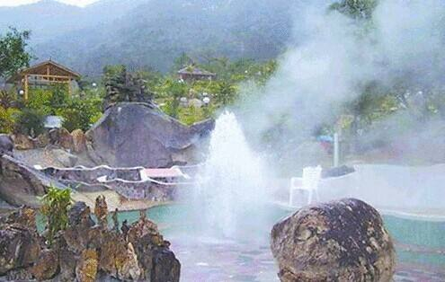

内蒙古赤峰市有两个热水温泉，其一：克旗热水温泉地处内蒙古高原东部边缘与大兴安岭山地和华北山地交汇处的克旗热水塘。温泉水温83℃左右，对人体的循环系统、消化系统、运动系统有奇特疗效，特别对高血压、心脑血管病、皮肤病、风湿病等顽症疗效显著。这里的矿泉水浴被称为“绿色疗法”。其二：宁城热水温泉位于内蒙古宁城县热水镇，距承德150公里，距北京380公里，距赤峰市区110公里。热水温泉资源得天独厚，温泉水温96℃左右，中心孔泉水温高达97℃，是全国水温最高的温泉之一。泉水中含多种微量元素，对许多疾病有很好的辅助疗效。
温泉具有“水温高、流量大、水质好、含氡高”四大特点，一般91.5度，最高98度，温泉水中含30多种对人体有益的微量元素，特别是氡的含量达142埃曼，是举世罕见的“氡泉”，具有调节内分泌，促进生殖腺新陈代谢的功能。泡洗后对人体能起到消除疲劳，强身健体的作用，是珍贵的疗养保健型天然温泉。 园内有红军池、畲族原生态天体浴场、温泉沐足、温泉戏水、温泉煮蛋等项目。
这里自然环境独特，景点景观众多。汝城温泉旅游景区位于南岭山脉中部和罗宵山脉南端的交接处，为典型的盆地地貌，属亚热带温暖湿润气候，夏无酷暑，冬无严寒，非常适宜避暑御寒；其树木茂盛、竹林婀娜、空气清新、景色秀美，享有“四面青山列翠屏，草色花香尽是春”之美誉，飞水寨瀑布、南国天山草原、有仙人桥、蜗牛山、蜗牛塔、飞来石、原始次森林、竹海、红军池、封泉遗址、商代文化遗址、冰川遗址等自然景观和人文景观，是观光、旅游、度假的理想之地